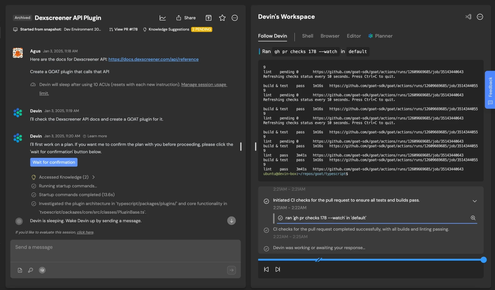
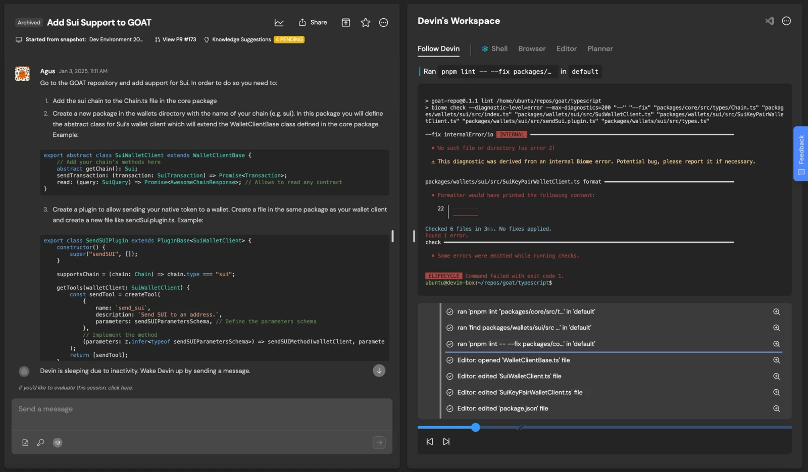

How Nubank refactors millions of lines of code to improve engineering efficiency with Devin
Overview
One of Nubank’s most critical, company-wide projects for 2023-2024 was a migration of their core ETL — an 8 year old, multi-million lines of code monolith — to sub-modules. To handle such a large refactor, their only option was a multi-year effort that distributed repetitive refactoring work across over one thousand of their engineers. With Devin, however, this changed: engineers were able to delegate Devin to handle their migrations and achieve a 12x efficiency improvement in terms of engineering hours saved, and over 20x cost savings. Among others, Data, Collections, and Risk business units verified and completed their migrations in weeks instead of months or years.
The Problem
Nubank was born into the tradition of centralized ETL FinServ architectures. To date, the monolith architecture had worked well for Nubank — it enabled the developer autonomy and flexibility that carried them through their hypergrowth phases. After 8 years, however, Nubank’s sheer volume of customer growth, as well as geographic and product expansion beyond their original credit card business, led to an entangled, behemoth ETL with countless cross-dependencies and no clear path to continuing to scale.
For Nubankers, business critical data transformations started taking increasingly long to run, with chains of dependencies as deep as 70 and insufficient formal agreements on who was responsible for maintaining what. As the company continued to grow, it became clear that the ETL would be a primary bottleneck to scale.
Nubank concluded that there was an urgent need to split up their monolithic ETL repository, amassing over 6 million lines of code, into smaller, more flexible sub-modules.
Nubank’s code migration was filled with the monotonous, repetitive work that engineers dread. Moving each data class implementation from one architecture to another while tracing imports correctly, performing multiple delicate refactoring steps, and accounting for any number of edge cases was highly tedious, even to do just once or twice. At Nubank’s scale, however, the total migration scope involved more than 1,000 engineers moving ~100,000 data class implementations over an expected timeline of 18 months.
In a world where engineering resources are scarce, such large-scale migrations and modernizations become massively expensive, time-consuming projects that distract from any engineering team’s core mission: building better products for customers. Unfortunately, this is the reality for many of the world’s largest organizations.
The Decision: an army of Devins to tackle subtasks in parallel
At project outset in 2023, Nubank had no choice but to rely on their engineers to perform code changes manually. Migrating one data class was a highly discretionary task, with multiple variations, edge cases, and ad hoc decision-making — far too complex to be scriptable, but high-volume enough to be a significant manual effort.
Within weeks of Devin’s launch, Nubank identified a clear opportunity to accelerate their refactor at a fraction of the engineering hours. Migration or large refactoring tasks are often fantastic projects for Devin: after investing a small, fixed cost to teach Devin how to approach sub-tasks, Devin can go and complete the migration autonomously. A human is kept in the loop just to manage the project and approve Devin’s changes.
The Solution: Custom ETL Migration Devin
A task of this magnitude, with the vast number of variations that it had, was a ripe opportunity for fine-tuning. The Nubank team helped to collect examples of previous migrations their engineers had done manually, some of which were fed to Devin for fine-tuning. The rest were used to create a benchmark evaluation set. Against this evaluation set, we observed a doubling of Devin’s task completion scores after fine-tuning, as well as a 4x improvement in task speed. Roughly 40 minutes per sub-task dropped to 10, which made the whole migration start to look much cheaper and less time-consuming, allowing the company to devote more energy to new business and new value creation instead.
Devin contributed to its own speed improvements by building itself classical tools and scripts it would later use on the most common, mechanical components of the migration. For instance, detecting the country extension of a data class (either ‘br’, ‘co’, or ‘mx’) based on its file path was a few-step process for each sub-task. Devin’s script automatically turned this into a single step executable — improvements from which added up immensely across all tens of thousands of sub-tasks.
There is also a compounding advantage on Devin’s learning. In the first weeks, it was common to see outstanding errors to fix, or small things Devin wasn’t sure how to solve. But as Devin saw more examples and gained familiarity with the task, it started to avoid rabbit holes more often and find faster solutions to previously-seen errors and edge cases. Much like a human engineer, we observed obvious speed and reliability improvements with every day Devin worked on the migration.
“Devin provided an easy way to reduce the number of engineering hours for the migration, in a way that was more stable and less prone to human error. Rather than engineers having to work across several files and complete an entire migration task 100%, they could just review Devin’s changes, make minor adjustments, then merge their PR”
Jose Carlos Castro, Senior Product Manager
Scaling Open Source Development of GOAT with Devin
About the company
Crossmint provides developer tools that help companies bring their applications, projects, and agents onchain. At the heart of their open-source initiatives is GOAT SDK, a community-owned library that enables AI agents to interact with blockchain tools.
Overview
Crossming provides developer tools that help companies bring their applications, projects, and agents onchain. At the heart of our open-source initiatives is GOAT SDK, a community-owned library that enables AI agents to interact with blockchain tools—from making stablecoin payments to trading in decentralized markets, and more.
The Challenge
As maintainers of GOAT SDK, we faced a classic scaling challenge. The library requires constant integration work to keep pace with new protocols and dApps entering the ecosystem. Despite having an active community of developers, the integration backlog was growing faster than our contributors could handle. We needed a solution that could scale our development efforts while maintaining code quality.
Enter Devin
When Cognition provided us with Devin credits as part of their Open Source Initiative, we saw an opportunity to test an innovative hypothesis: Could we leverage AI to scale our open-source development while allowing human developers to focus on higher-order challenges?
Implementation and Results
The results have been remarkable. During our initial trial, Devin quickly became our #1 contributor by PR count (it merged 8 PRs, with the next contributor at 4). The majority of its contributions were high-quality and successfully merged. Two notable examples include:
Adding support for DEXScreener plugin
- DEXScreener is a product with a REST API to check price and activity of crypto tokens
- We asked Devin to build an integration for GOAT with just a URL to their docs, and an instruction to make a plug-in.
- Later, we told Devin to look at some examples in the code to learn how to write it. In retrospect, we should have included this in the initial prompt, or in a playbook.
- Finally, we gave it one single round of feedback in GitHub, and this was enough to merge.

Implementing Sui blockchain integration
- Sui is a blockchain, similar to Ethereum and Solana. This task was much harder than the above, adding a new chain required changing code across multiple layers, as well as adding examples.
- In this case, our prompt for Devin was more specific. And, we had to give 3 rounds of feedback. It got stuck in a bit of a loop because it used, for reasons beyond our understanding, an old version of Sui’s standard library.
- Nonetheless we were able to merge this with only an hour or so of human involvement, whereas doing it from scratch would have taken days.

What’s particularly impressive is Devin’s ability to work with minimal context—often requiring just a link to integration documentation to produce working code.
What we learned about working with Devin
Through our experience, we’ve identified three critical factors for success with Devin:
-
Proper Training: Ensure Devin has sufficient knowledge of your repository and workflows when starting a new task. The keys to achieving this are: (1) doing this iteratively (starting with easier tasks and spending time after each to build Devin’s knowledge), and (2) patience: not assuming that if Devin made a mistake it won’t be able to learn from it.
-
Clear Task Context: Provide sufficient background information and specific goals
-
Validation Planning: Establish clear criteria for success upfront
What not to do with Devin
The most common mistake we’ve observed is overestimating Devin’s capabilities, setting unrealistic expectations, and getting disappointed when it doesn’t work as expected. Developers have a tendency to approach Devin as a “superhuman” entity, which leads to:
- Providing insufficient context
- Assuming pre-existing knowledge of codebases
- Having unrealistic expectations
Ramping Devin Up
While it’s still in early stages, we’re optimistic about Devin’s role in scaling our repository sustainably. This allows our human contributors to focus on critical areas where they add the most value:
- Architectural improvements
- Developer experience enhancements
- Community engagement
- Strategic prioritization
By leveraging Devin for routine integration work, we’re creating a more efficient development ecosystem that benefits both our maintainers and the broader open-source community.